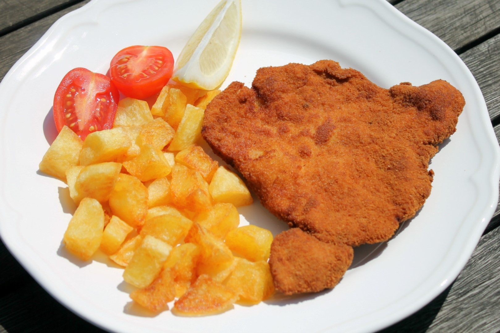

Rantotthus Recipe FTW

Description
Ingredients:
- 500g finomliszt
- 1dl tej
- 220ml viz
- 20g friss eleszto
- 1 teaskanal cukor
- 9g so
- 5dl napraforgo olaj
Steps:
-
Az élesztőt elkeverjük a cukorral, egy teáskanál liszttel, és felöntjük langyos tejjel. Tíz perc alatt felfut.
Egy tálba beleszitáljuk a lisztet, hozzáöntjük a sót, a felfutott élesztőt és a vizet.
Alaposan kidagasztjuk, amíg sima és fényes lesz a tészta. Fontos, mert nyújtásnál így nem fog szakadni.
-
Letakarjuk, és duplájára kelesztjük, nagyjából egy óra alatt.
-
Szedjük egyenlő darabokra a tésztát, formázzuk ki, majd pihentessük 10 percig. Tegyük fel melegedni az olajat,
és mikor már forró, kezdjük el olajos kézzel nyújtani a tésztát, hogy ne ragadjon a kezünkhöz.
Süssük meg mindkét oldalát aranybarnára, majd csepegtessük le.
-
Ízlés szerint tálaljuk.